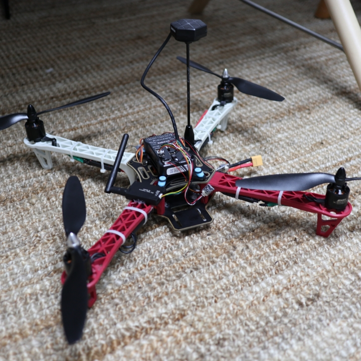

자기소개서 목차
인사말
안녕하세요! 저는 최희찬이라고 합니다.
현재 연세대학교 인공지능학과 2학년으로 재학중입니다.
이 자기소개서 페이지는 인터넷프로그래밍 수업의 과제를 위해 제작되었습니다.
잘 읽어봐 주시면 감사하겠습니다!
좋아하는 것들
-
전자기기들
컴퓨터, 스마트폰, 태블릿, 모니터 등등 IT기기들을 포함하여 전기로 작동하는 거의 모든것들을 좋아합니다.
그래서 제 지출의 대부분들이 다양한 전자기기들을 모으는데 사용되고 있습니다.
컴퓨터관련 학과를 선택한 것도 이러한 이유에서인 것 같습니다.
-
버스타고 학교 갈 때 등 시간이 남을 때 주로 유튜브를 시청합니다. 거의 하루에 한시간 정도는 유튜브를 보는 것 같습니다.
주로 전자기기, 자동차 관련 영상들을 많이 시청하고, 학교에서 배운 내용이 이해가 안될 때 유튜브에서 많이 도움을 얻습니다.
-
해리포터 시리즈
사실 영화는 별로 좋아하지 않는데, OTT서비스에서 해리포터 시리즈 만큼은 굉장히 재미있게 봤습니다.
나중에 시간이 되면 해리포터 책도 읽어보려합니다.
나의 취미
-
백준 온라인 저지는 프로그래밍 문제를 여러 알고리즘들을 사용하여 해결하고 채점받을 수 있는 사이트 입니다.
처음에는 알고리즘을 공부하기 위해 시작했는데, 재미를 느끼고 제 취미가 되었습니다.
이 사이트는 푼 문제에 따라 브론즈-실버-골드-플래티넘-다이아-루비 순으로 레벨을 부여해줍니다.
저는 지금 플레티넘5인데, 매일 한문제 이상을 풀어 이번 년도 안에 플레티넘의 상위 레벨까지 달성하는 것이 목표입니다.
-
드론 조립
고등학교떄 제 꿈이 드론개발자였던 만큼, 드론에 관심이 많았습니다.
지금은 조립한 드론에 소형 컴퓨터와 "Jetson nano"라는 소형 컴퓨터를 장착하여 비행 중 특정 물체를 인식하도록 만들기 위해 노력하고 있습니다.
지금 제가 인공지능 중에서도 컴퓨터 비전 분야의 인공지능에 관심이 많은 이유도 이 때문인 것 같습니다.

장래 희망
제 장래 희망은 인공지능 개발자 입니다. 제가 인공지능학과로 입학한것도 이 때문입니다.
자연어 처리 분야의 인공지능과 컴퓨터 비전 분야의 인공지능 중에서 제가 관심있는 분야는 컴퓨터 비전 분야의 인공지능입니다.
학교에서 여러 인공지능 관련 수업들을 들으며 인공지능 개발자로 활동할 분야를 찾고자 하고 있습니다.
인공지능 관련 직종은 석사 이상의 경력을 요구하는 기업들이 많은 것 같아 대학원 진학도 생각하고 있습니다.
반려동물 소개
마지막으로, 집에서 키우고 있는 강아지를 소개해드리겠습니다.
이름은 '아지'이고, 실버색 푸들입니다.
마치며
제 자기소개서를 읽어주셔서 감사합니다.
사실 html에는 별로 관심이 없어서 인터넷 프로그래밍 수업을 듣기 전까지는 한번도 써본적 없었는데,
몇 주간 html과 css에 대해 배우고 직접 html문서를 만들어보니 결과물이 바로 보이는 것이 재미있는 것 같습니다.